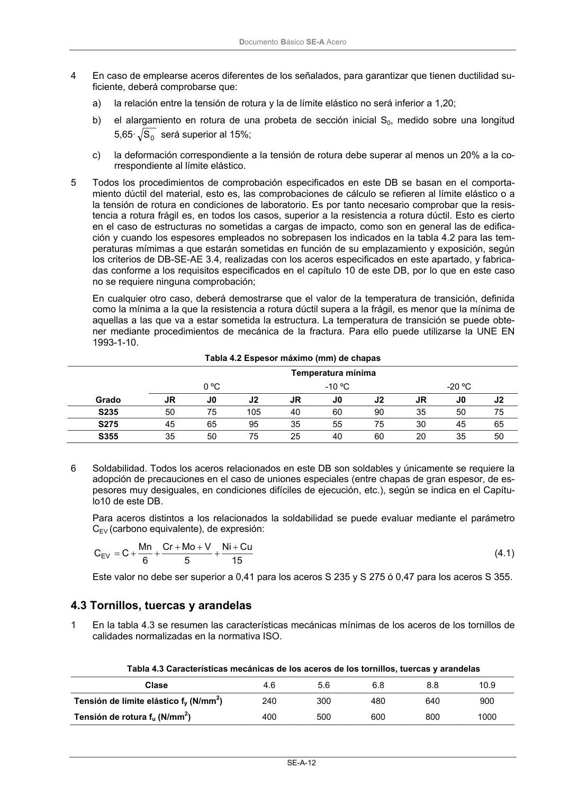

DB-SE-A Acero · edición 2007-10-23 · capa oficial
Documento DB-SE-A-oficial · SHA-256 del PDF 9ed9ea694aabfbda3bfbbef40dfe9223fde05d13c35bc2ba9751e5a96a22a64f
Copia fiel del PDF fuente · Fuente oficial
Ficha de la disposición en la fuente oficial
Formatos: JSON del segmento · Markdown
3 ≤ t ≤ 100 Temperatura del ensayo Charpy ºC S235JR S235J0 S235J2 235 225 215 360 20 0 -20 S275JR S275J0 S275J2 275 265 255 410 20 0 -20 S355JR S355J0 S355J2 S355K2 355 345 335 470 20 0 -20 -20 (1) S450J0 450 430 410 550 0 (1) Se le exige una energía mínima de 40J. 3 Las siguientes son características comunes a todos los aceros: - módulo de Elasticidad: E 210.000 N/mm2 - módulo de Rigidez: G 81.000 N/mm2 - coeficiente de Poisson: ν 0,3 - coeficiente de dilatación térmica: α 1,2·10-5 (ºC)-1 - densidad: ρ 7.850 kg/m3 DocumentoBásico SE-A Acero SE-A-12 4 En caso de emplearse aceros diferentes de los señalados, para garantizar que tienen ductilidad su- ficiente, deberá comprobarse que: a) la relación entre la tensión de rotura y la de límite elástico no será inferior a 1,20; b) el alargamiento en rotura de una probeta de sección inicial S0, medido sobre una longitud 5,65· 0 S será superior al 15%; c) la deformación correspondiente a la tensión de rotura debe superar al menos un 20% a la co- rrespondiente al límite elástico. 5 Todos los procedimientos de comprobación especificados en este DB se basan en el comporta- miento dúctil del material, esto es, las comprobaciones de cálculo se refieren al límite elástico o a la tensión de rotura en condiciones de laboratorio. Es por tanto necesario comprobar que la resis- tencia a rotura frágil es, en todos los casos, superior a la resistencia a rotura dúctil. Esto es cierto en el caso de estructuras no sometidas a cargas de impacto, como son en general las de edifica- ción y cuando los espesores empleados no sobrepasen los indicados en la tabla 4.2 para las tem- peraturas mímimas a que estarán sometidas en función de su emplazamiento y exposición, según los criterios de DB-SE-AE 3.4, realizadas con los aceros especificados en este apartado, y fabrica- das conforme a los requisitos especificados en el capítulo 10 de este DB, por lo que en este caso no se requiere ninguna comprobación; En cualquier otro caso, deberá demostrarse que el valor de la temperatura de transición, definida como la mínima a la que la resistencia a rotura dúctil supera a la frágil, es menor que la mínima de aquellas a las que va a estar sometida la estructura. La temperatura de transición se puede obte- ner mediante procedimientos de mecánica de la fractura. Para ello puede utilizarse la UNE EN 1993-1-10. Tabla 4.2 Espesor máximo (mm) de chapas Temperatura mínima 0 ºC -10 ºC -20 ºC Grado JR J0 J2 JR J0 J2 JR J0 J2 S235 50 75 105 40 60 90 35 50 75 S275 45 65 95 35 55 75 30 45 65 S355 35 50 75 25 40 60 20 35 50 6 Soldabilidad. Todos los aceros relacionados en este DB son soldables y únicamente se requiere la adopción de precauciones en el caso de uniones especiales (entre chapas de gran espesor, de es- pesores muy desiguales, en condiciones difíciles de ejecución, etc.), según se indica en el Capítu- lo10 de este DB. Para aceros distintos a los relacionados la soldabilidad se puede evaluar mediante el parámetro CEV (carbono equivalente), de expresión: 15 Cu Ni 5 V Mo Cr 6 Mn C CEV + + + + + + = (4.1) Este valor no debe ser superior a 0,41 para los aceros S 235 y S 275 ó 0,47 para los aceros S 355.
